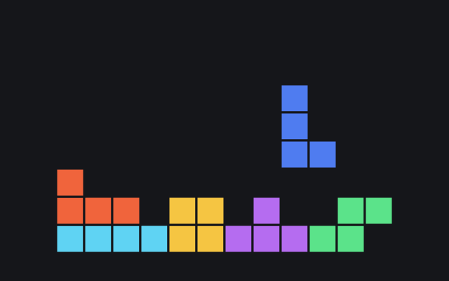

BetterWM
Column-based tiling window manager for macOS. Tile windows by ⌥-dragging them into place; everything else stays a normal, freely movable window.

Senior Software Engineer · Berlin, Germany
11+ years in frontend architecture, web performance and shared platforms. Currently on Canvas Core at Miro, building the ECS-based engine behind the real-time collaborative canvas.
Column-based tiling window manager for macOS. Tile windows by ⌥-dragging them into place; everything else stays a normal, freely movable window.

Keyboard-first, Spotlight-style file navigator for macOS. AppKit front end over a C engine.

WebGPU canvas backed by a C entity component system compiled to WebAssembly. One draw call for shapes, text and overlays.

Tetris from scratch in TypeScript: seeded random generator, level progression and a tiny DOM renderer.

N-body solar system simulator on a 2D canvas with real masses and Newton's constant. Follow any planet, tune the time step live.

2D ray-cast lighting on canvas. Draw walls with the mouse and watch the light cast shadows in real time.
Technologies: TypeScript, JavaScript, React, WebAssembly, HTML, CSS, Java, PHP, Kafka
Architecture: Frontend platforms, Entity Component System (ECS), API design, object lifecycle and composition, design systems, real-time applications, client-side data processing
Senior Frontend Engineer, Canvas Core · Berlin, Germany
Frontend Engineer · Berlin, Germany
Frontend Engineer, Yandex Travel & Avia · Yekaterinburg, Russia
Lead Frontend Engineer · Yekaterinburg, Russia
Ural State University named after A. M. Gorky